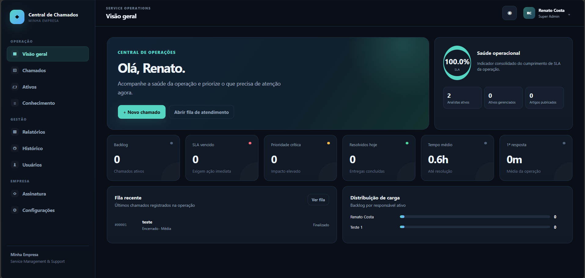
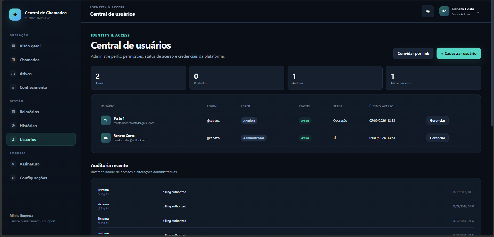
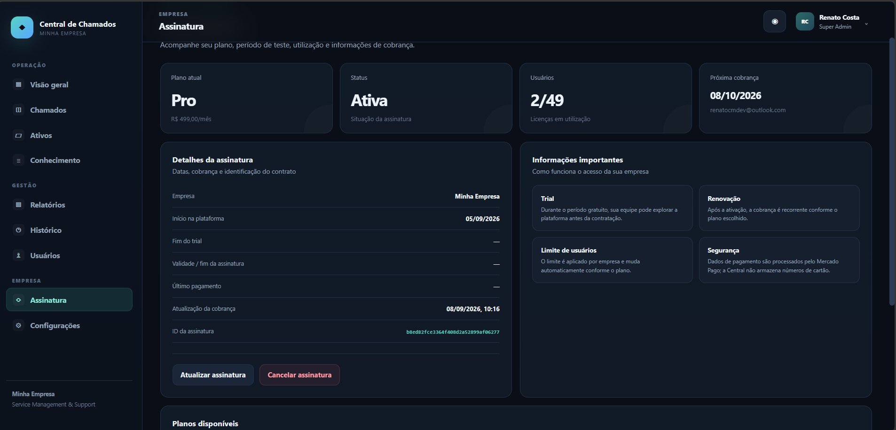

Operação
Fila de chamados, prioridades, responsáveis, histórico e indicadores.
Sou Renato M. Costa. Transformo problemas reais em aplicações web funcionais, com foco em produto, experiência do usuário e suporte técnico.
const renato = {
role: "Full Stack Developer",
skills: [
"JavaScript",
"Node.js",
"Express",
"SQL / MongoDB"
],
mindset: "resolver problemas"
};Minha experiência profissional me ensinou a trabalhar com informação, processo, responsabilidade e resolução rápida de problemas.
Hoje aplico essa base no desenvolvimento de sistemas web. Gosto de entender o problema antes de programar e construir uma solução que faça sentido para quem realmente vai usar.
Plataforma completa de Help Desk criada por mim para gerenciar operações de suporte, usuários, SLAs, conhecimento e assinaturas.

Fila de chamados, prioridades, responsáveis, histórico e indicadores.
Usuários, perfis, permissões, convites e auditoria administrativa.
Planos, assinatura, limites de usuários e estrutura de cobrança.


Conferência de documentos e dados, emissão de tickets, relatórios, controles operacionais e comunicação com equipes.
Montagem e testes de placas, cabos e equipamentos eletrônicos, com identificação de falhas.
Universidade Cruzeiro do Sul · Concluído em 2026.
Busco oportunidades onde eu possa evoluir como desenvolvedor e contribuir com produto, suporte e tecnologia.